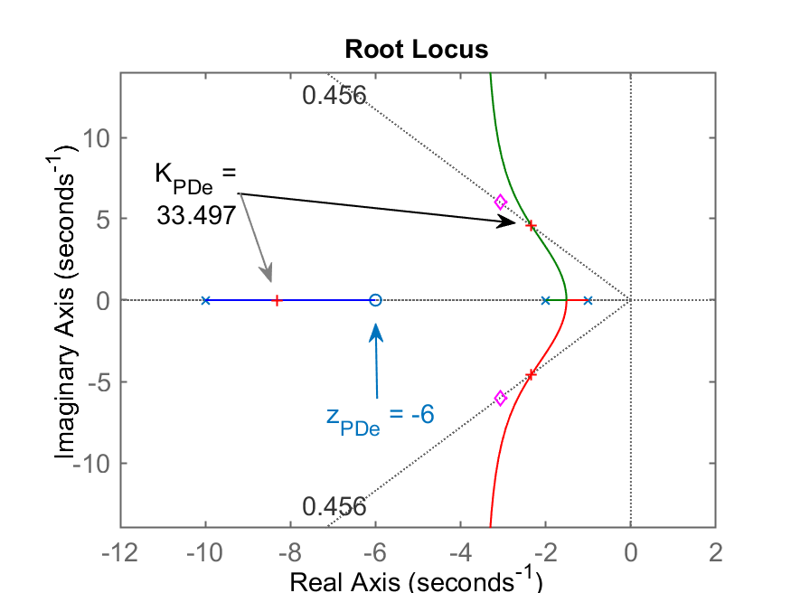

Projetos de Controladores PD

Índice:
Recuperando dados de aula passada
Lembrando do arquivo de dados.mat gerado em aula anterior. Carregando estes dados:
>> load dados
>> % Lembrando da planta
>> zpk(G)
1
------------------
(s+10) (s+2) (s+1)
Projetando um PD
Lembrando das aulas anteriores, temos que a equação de um PD (Controlador Proporcional Derivativo) é do tipo:
Notamos que necessitamos definir uma posição para o zero do PD. Lembrando que quanto mais próximo este zero estiver da origem do plano-s, tanto mais seu comportamento será semelhante a uma ação Derivativa (resposta mais rápida para o sistema em MF).
Casos possíveis para o zero do PD
Estudando então posições possíveis para o zero do PD, temos que analisar seu impacto no RL final do sistema. Considerando então:
- Caso a) ;
- Caso b) (cancelando polo mais lento da planta);
- Caso c) (entre os 2 polos mais lentos da planta);
- Caso d) (cancelando o segundo polo + lento da planta);
- Caso e) .
Realizando os cálculos necessários usando o Matlab:
>> % Gerando as FTMA(s)'s com os diferentes casos de PDs:
>> ftma_PDa=tf(poly(-0.5),poly([-1 -2 -10]));
>> zpk(ftma_PDa) % verificando o caso desta FTMA(s):
(s+0.5)
------------------
(s+10) (s+2) (s+1)
>> ftma_PDb=tf(poly(-1),poly([-1 -2 -10]));
>> ftma_PDc=tf(poly(-1.5),poly([-1 -2 -10]));
>> ftma_PDd=tf(poly(-2),poly([-1 -2 -10]));
>> ftma_PDe=tf(poly(-6),poly([-1 -2 -10]));
Como vamos querer estudar o RL resultante para cada um dos casos e identificar boas soluções, já seria mais interessante, incorporar nos gráficos dos RLs, a posição desejada para os polos dominantes de MF.
A implantação de um PD numa malha de controle só faz sentido se queremos reduzir o do Controlador Proporcional. Vamos supor que queremos neste caso reduzir o do mesmo em em relação ao controlador Proporcional, ou:
:
>> % Lembrando do ts do Controlador Proporcional
>> stepinfo(ftmf)
RiseTime: 0.50254
SettlingTime: 3.7476 <--- ts do Controlador Proporcional
SettlingMin: 0.72345
SettlingMax: 1.0132
Overshoot: 28.332
Undershoot: 0
Peak: 1.0132
PeakTime: 1.2474
>> % Calculando o t_s para o PD:
>> new_ts = 3.7476/3
new_ts =
1.2492
>> new_ts = 1.3; % Arredondando...
Calculando a posição desejada para os polos dominantes desejados para a MF obedecendo ao () e desejados...
Lembrando que (ver equações para cálculo da parte real e da parte imaginária do par de polos complexos conjugados dominantes desejados em: "Projeto de PI usando contribuição angular(versão de 2019/2)":
>> wn = 4/(zeta*1.3) % freq. natural de oscilação
wn =
6.7484
>> sigma = -wn*zeta % parte real dos polos
sigma =
-3.0769
>> wd = wn*sqrt(1-zeta^2) % parte imaginária dos polos
wd =
6.0061
>> polos_MFd=[sigma+i*wd sigma-i*wd]' % montando vetor para uso posterior
polos_MFd =
-3.0769 - 6.0061i
-3.0769 + 6.0061i
>> % Traçando os RLs
>> rlocus(ftma_PDa); hold on; sgrid(zeta,0); plot(polos_MFd,'md')
>> % ajustando o axis
>> axis([-12 2 -14 14])
>> K_PDa=rlocfind(ftma_PDa) % fechando malha para este PD
Select a point in the graphics window
selected_point =
-6.2109 + 12.136i
K_PDa =
160.83
>> % Figura gerada: RL_PDa.png
>> % Partindo para o outro caso de PD (caso b)
>> figure; rlocus(ftma_PDb); hold on; sgrid(zeta,0); plot(polos_MFd,'md')
>> axis([-12 2 -14 14])
>> K_PDb=rlocfind(ftma_PDb)
Select a point in the graphics window
selected_point =
-6.0118 + 11.616i
K_PDb =
150.93
>> % Segue outro PD (caso c)
>> figure; rlocus(ftma_PDc); hold on; sgrid(zeta,0); plot(polos_MFd,'md')
>> axis([-12 2 -14 14])
>> K_PDc=rlocfind(ftma_PDc)
Select a point in the graphics window
selected_point =
-5.7133 + 11.009i
K_PDc =
139.45
>> % Outro PD (caso d)
>> figure; rlocus(ftma_PDd); hold on; sgrid(zeta,0); plot(polos_MFd,'md')
>> axis([-12 2 -14 14])
>> K_PDd=rlocfind(ftma_PDd)
Select a point in the graphics window
selected_point =
-5.481 + 10.576i
K_PDd =
132.1
>> % Último caso de PD (caso e)
>> figure; rlocus(ftma_PDe); hold on; sgrid(zeta,0); plot(polos_MFd,'md')
>> axis([-12 2 -14 14])
>> K_PDe=rlocfind(ftma_PDe)
Select a point in the graphics window
selected_point =
-2.3294 + 4.5944i
K_PDe =
33.497
Através dos comandos anteriores realizados no Matlab podemos montar uma "tabela resumo":
| RL Caso (a): | RL Caso (b): |
|---|---|
 |
 |
| RL Caso (c): | Caso (d): |
 |
 |
| Caso (e): | |
|  |
Observando os RLs anteriores, percebemos os seguintes casos promissores: (b), (d) e (e). Estas propostas permitem fechar a malha com polos de MF mais distantes do eixo (implica menores ).
Fechando as malhas para comprovar as expectativas anteriores...
>> ftmf_PDa=feedback(K_PDa*ftma_PDa, 1);
>> ftmf_PDb=feedback(K_PDb*ftma_PDb, 1);
>> ftmf_PDc=feedback(K_PDc*ftma_PDc, 1);
>> ftmf_PDd=feedback(K_PDd*ftma_PDd, 1);
>> ftmf_PDe=feedback(K_PDe*ftma_PDe, 1);
>> % Gerando as figuras dos "step's"...
>> figure; step(ftmf_PDa)
>> % figura gerada: step_PDa.png
>> figure; step(ftmf_PDb)
>> figure; step(ftmf_PDc)
>> figure; step(ftmf_PDd)
>> figure; step(ftmf_Pde)
Comparando os resultados obtidos:
-
Caso a) ;
RL do PDa Step PDa 
Comentários: pelo RL se percebe que este é a pior opção de PD. Maior de todos causado pelo polo real de MF muito próximo do zero deste PD (em ).
-
Caso c) (entre os 2 polos mais lentos da planta);
RL do PDc Step PDc Comentários: pelo RL também poderíamos descartar esta opção para o zero do PD. Confirmamos isto pela posição final do polo dominante de MF próximo do zero do PD, em ; apesar de segundos.
-
Caso b) (cancelando polo mais lento da planta);
RL do PDb Step PDb 
Comentários: opção promissora. Aqui cancelamos o polo mais lento da planta em com o zero do PD nesta posição. Consequentemente: o sistema deixa de ser 3a-ordem para se transformar num sistema de 2a-ordem. Resultados finais: , com ou erro de 11,7%.
-
Caso d) (cancelando o segundo polo + lento da planta);
RL do PDd Step PDd Comentários: opção promissora. Aqui também houve cancelamento polo-zero, neste caso, o zero do PD cancelou o segundo polo mais lento da planta. Resultado semelhante ao caso (b). Valores finais: , com ou seja, um erro de 7%.
-
Caso e)
E por fim, o último caso, onde o zero do PD ficou muito afastado do eixo , o que praticamente "anula" a ação derivativa, isto é, o tempo de assentamento é reduzido, mas não tanto assim.
RL do PDe Step PDe 
Comparando apenas os casos mais promissores
Analisando os casos: (b) e (d), temos que:
>> figure; step(ftmf_PDb, ftmf_PDd)
>> legend('PD_b', 'PD_d')
Figura comparando as respostas ao degrau em MF obtidas para os casos (b) e (d):

Comentários finais: Note que o zero do PD nos casos (b) e (d) foram colocados (cancelaram) os polos mais lentos da planta em ou .
Detalhe: porém na vida real, na prática, é difícil ou mesmo impraticável realizar este cancelamento polo-zero pelo simples motivo de que é difícil saber exatamente a posição destes polos num sistema real similar a este (dificilmente vamos obter com precisão os valores dos polos deste sistema). Portanto, este cancelamento polo-zero não pode ser obtido na vida real. Motivo pelo qual, a opção finalmente mais promissora é o caso (c), onde o zero do PD se encontra entre os 2 polos mais lentos da planta, o que pode ser plausível, já que na prática, não sabemos onde eles estão localizados com precisão, mas podemos tentar estimar a localização real dos polos mais lentos.
Melhor solução
Opção finalmente adotada: c) (entre os 2 polos mais lentos da planta), que resulta em:
>> stepinfo(ftmf_PDc)
RiseTime: 0.1278
SettlingTime: 0.68318
SettlingMin: 0.82599
SettlingMax: 1.0805 <-- %OS = 8,05%
Overshoot: 18.38
Undershoot: 0
Peak: 1.0805
PeakTime: 0.28794
>> erro_PDc=(1-dcgain(ftmf_PDc))/1*100
erro_PDc =
8.7267
>>
Questão 1) Outro método de projeto?
Existe uma forma de realizar o projeto do PD sem necessidade de tantas análises?
Sim, realizando contribuição angular...
Projeto de PD usando Contribuição Angular
Para o cálculo da contribuição angular, usaremos a rotina pronta find_polo_zero.m:
» help find_polo_zero
Angular contribution routine to find out where to locate pole or zero
of the controller depending on the desired location for MF poles
Use:
This routine already expects a tf named "ftma_aux"
where: ftma_aux(s)=C(s)*G(s);
and where: C(s) is already partially supplied (already containing
zero(s) or already containing pole(s)
The routine uses angular contribution and root locus method and asks
while running if the idea is to determine the location of the zero or
the pole of the controller.
Fernando Passold, 14/10/2020, 20/10/2020, 30/10/2022.
Notamos que necessitamos definir uma auxiliar para uso desta ferramenta. A variável ftma_aux do tipo transfer function que dever ser criada e deve incluir a equação parcial do controlador, isto é, menos a parte que esta rotina deve calcular (a posição do polo ou do zero do controlador).
>> ftma_aux = G; % neste caso, para projeto de um PD onde falta definir seu zero
>> zpk(ftma_aux)
1
------------------
(s+10) (s+2) (s+1)
>> find_polo_zero
%OS (dresesired Overshoot, in %): ? 20%
ts_d (desired settling time): ? 1.3
Desired MF poles in: s = -3.07692 \pm j 6.0061
Evaluating the pole(s) contribution angle(s):
Pole 1 in s= -10 --> angle: 40.9432^o
Pole 2 in s= -2 --> angle: 100.165^o
Pole 3 in s= -1 --> angle: 109.076^o
Sum of the angle(s) of pole(s):
$\sum \theta_{poles}=250.184^o$
Evaluating the zero(s) contribution angle(s):
Sum of the angle(s) of zero(s):
$\sum \theta_{zeros}=0^o$
Determining pole or zero location of the controller:
Select: [p]=pole or [z]=zero, for the controller ? z
Angle contribution required for controller: 70.1841^o
The ZERO of this controller must be at s = -5.24113
To continue the project, note that:
>> zpk(ftma) =
(s+5.241)
------------------
(s+10) (s+2) (s+1)
It is suggested to continue with the command:
>> K_ = rlocfind(ftma)
Então, executando este script percebemos que o zero do PD deveria ter sido localizado em e então sua equação fica:
Segue o gráfico da contribuição angular gerado para este caso:

Encontrando o ganho que falta...
>> K_PD2=rlocfind(ftma)
Select a point in the graphics window
selected_point =
-3.0707 + 5.9607i
K_PD2 =
55.062
Segue RL deste PD destacando o ganho adotado:

Fechando a malha...
>> ftmf_PD2=feedback(K_PD2*ftma,1);
>> figure; step(ftmf_PD2)
Gráfico da resposta ao degrau, usando este PD:

Note que o (considerando valor final da entrada degrau, ). Obtemos também um erro de .
Reduzindo ainda mais o
Em função dos casos de PD analisados anteriormente, notamos que podemos estipulador um bem mais baixo, para algo como segundos:
>> stepinfo(ftmf) % lembrando do ts do Cont. Proporcional
RiseTime: 0.50254
SettlingTime: 3.7476
SettlingMin: 0.72345
SettlingMax: 1.0132
Overshoot: 28.332
Undershoot: 0
Peak: 1.0132
PeakTime: 1.2474
>> 3.7/0.7 % comparando o novo ts com o ts do Cont. Proporcional
ans =
5.2857
>> find_polo_zero
%OS (dresesired Overshoot, in %): ? 20
ts_d (desired settling time): ? 0.7
Desired MF poles in: s = -5.71429 \pm j 11.1542
Evaluating the pole(s) contribution angle(s):
Pole 1 in s= -10 --> angle: 68.982^o
Pole 2 in s= -2 --> angle: 108.418^o
Pole 3 in s= -1 --> angle: 112.911^o
Sum of the angle(s) of pole(s):
$\sum \theta_{poles}=290.311^o$
Evaluating the zero(s) contribution angle(s):
Sum of the angle(s) of zero(s):
$\sum \theta_{zeros}=0^o$
Determining pole or zero location of the controller:
Select: [p]=pole or [z]=zero, for the controller ? z
Angle contribution required for controller: 110.311^o
The ZERO of this controller must be at s = -1.58586
To continue the project, note that:
>> zpk(ftma) =
(s+1.586)
------------------
(s+10) (s+2) (s+1)
It is suggested to continue with the command:
>> K_ = rlocfind(ftma)
Segue gráfico da contribuição angular obtida para este novo PD:
Note: a posição calculada para este script para o zero do PD praticamente coincide com o caso (c) analisado anteriormente (que justamente se aplica para os casos em que não se conhece com exatidão a posição dos 2 polos mais lentos, ou dominantes na resposta da planta).
Encontrando o ganho...
>> K_PD3=rlocfind(ftma)
Select a point in the graphics window
selected_point =
-5.6801 + 11.183i
K_PD3 =
143.67
Segue gráfico do RL com ganho adotado para este PD:

Fechando a malha com este ganho...
>> ftmf_PD3=feedback(K_PD3*ftma,1);
>> figure; step(ftmf_PD3)
Resultado final obtido:

Calculando ainda o erro de regime permanente:
>> erro_PD=(1-dcgain(ftmf_PD3))/1*100
erro_PD =
8.0699
Questão 2) Reduzindo demais o
Questão: -- e se fosse desejado segundos?
Testando "PD4" com -- é possível?
>> find_polo_zero
%OS (dresesired Overshoot, in %): ? 20
ts_d (desired settling time): ? 0.5
Desired MF poles in: s = -8 \pm j 15.6159
Evaluating the pole(s) contribution angle(s):
Pole 1 in s= -10 --> angle: 82.7016^o
Pole 2 in s= -2 --> angle: 111.018^o
Pole 3 in s= -1 --> angle: 114.145^o
Sum of the angle(s) of pole(s):
$\sum \theta_{poles}=307.865^o$
Evaluating the zero(s) contribution angle(s):
Sum of the angle(s) of zero(s):
$\sum \theta_{zeros}=0^o$
Determining pole or zero location of the controller:
Select: [p]=pole or [z]=zero, for the controller ? z
Angle contribution required for controller: 127.865^o
The ZERO of this controller must be at s = 4.14108
To continue the project, note that:
>> zpk(ftma) =
(s-4.141)
------------------
(s+10) (s+2) (s+1)
It is suggested to continue with the command:
>> K_ = rlocfind(ftma)
Segue gráfico da contribuição angular deste PD:

Note: a posição calculada para o zero do PD o colocou no semi-plano direito do plano-s, ou seja, um zero com parte real positiva, o que, no momento de fechar a malha para este sistema, vai atrair um polo de MF para esta parte do plano-s (instável), muito provavelmente.
Mesmo assim, para confirmar o que vai ocorrer, vamos terminar os cálculos para este PD...
>> K_PD4=rlocfind(ftma)
Select a point in the graphics window
selected_point =
-7.9692 + 15.108i
K_PD4 =
212.79
RL gerado para este PD destacando certos valores de ganho...

Note que o ganho máximo que poderia ser adotado para este PD é :

Comprovando que o sistema resulta instável com ganho , obtemos a seguinte resposta para entrada degrau unitário:
>> ftmf_PD4 = feedback(K_PD4*ftma,1);
>> figure; step(ftmf_PD4)
Confirmando a resposta instável deste sistema para entrada degrau:
Note como rapidamente o sistema fica instável por conta do polo de MF na posição (instável):
>> pole(ftmf_PD4)
ans =
-7.9754 + 15.108i
-7.9754 - 15.108i
2.9507 + 0i
Obs.: Mesmo que o ganho deste PD seja reduzido é possível se evitar a instabilidade deste sistema em MF, mas a resposta gerada não reflete para nada o desejado
CLIQUE AQUI se desejar saber o que ocorre com a resposta do sistema quando polo de MF dominante estiver próximo de s = -0,5.
Observando o RL anterior e tentando polo de MF real dominante em :
>> figure; rlocus(ftma);hold on; sgrid(zeta,0);plot(polos_mf,'md')
>> [K_PD4b,polos_MF_PD4b]=rlocfind(ftma)
Select a point in the graphics window
selected_point =
-0.79878 - 0.05277i
K_PD4b =
0.46587
polos_MF_PD4b =
-9.9071
-2.2998
-0.79312
>> % Fechando a malha com este valor de ganho...
>>
>> ftmf_PD4b = feedback(K_PD4b*ftma,1);
>> figure; step(ftmf_PD4b)
Obteremos o seguinte resultado:
| RL do PD4 com | Resposta ao degrau |
|---|---|
 |
 |
Note que obviamente não é resposta esperada. A saída do sistema tende para (um valor negativo até).
Conclusão Final
Usando contribuição angular, tanto é possível se estabelecer segundos (1/3 do do Controlador Proporcional), quanto fazer segundos (um mais do que menor que o do Controlador Proporcional).
Esta última possibilidade (um bastante reduzido) só é percebido depois de ser realizado um "estudo" de posições possíveis para o zero do PD como o que foi realizado no início deste documento.
Nestes 2 últimos casos, obtemos como resultados:
| PD2 | PD3 | |
|---|---|---|
| Equação | ||
| 1,3 | 0,7 | |
| RL | |
|
| Step | |
|
| 19% | 10% | |
| 1,24 | 0,675 | |
| 0,935 | 0,919 | |
| 6,5% | 8,1% | |
| 55,0624 | 144 | |
| 0,284 | 0,225 | |
| Conclusão | Mais adequadoMenor valor máximodo sinal atuador, emenor erro.(Note valor do) | PossívelMas elevadosvalores de atuação, eerro maior.(Note valor do) |
Note que o item "Gráficos de e " mostra como se obtêm o gráfico para (sinal de atuação gerado sobre a planta).
CLIQUE AQUI, para saber como gerar os graficos de u(t) para o PD2 e PD3.
Segue os comandos usados para gerar os graficos e dados à respeito de para o PD2 e PD3:
>> PD2=tf(K_PD2*poly(-5.241),1);
>> zpk(PD2)
55.062 (s+5.241)
>> aux_PD2=PD2/(1+PD2*G);
>> figure; step(aux_PD2)
Error using DynamicSystem/step (line 95)
Cannot simulate the time response of improper (non-causal) models.
>> % Ok, Matlab não simula (usando step) casos de tf com grau numerador > grau denominador)
>> % Criando vetor t e u(t)
>> t=0:1E-3:2; % vetor t de 0 até 2 segundos passo de 1 ms
>> pontos=length(t)
pontos =
2001
>> u=ones(pontos,1);
>> u(1:5,1) % mostrando 5 primeiros valores de u(t)
ans =
1
1
1
1
1
>> u_PD2=lsim(aux_PD2,u,t);
Error using DynamicSystem/lsim (line 84)
Cannot simulate the time response of improper (non-causal) models.
>> % Artimanha para simular comportamento derivativo: acrescentar polo distante...
>> PD2=tf(K_PD2*poly(-5.241),poly(-1000));
>> zpk(PD2)
55.062 (s+5.241)
----------------
(s+1000)
>> aux_PD2=PD2/(1+PD2*G);
>> figure; step(aux_PD2)
>> % Repetindo para o outro PD:
>> PD3=tf(K_PD3*poly(-1.586),poly(-1000));
>> zpk(PD3)
143.67 (s+1.586)
----------------
(s+1000)
>> aux_PD3=PD3/(1+PD3*G);
>> figure; step(aux_PD3)
Fim.
Prof. Fernando Passold, em 07/11/2022.